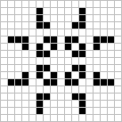
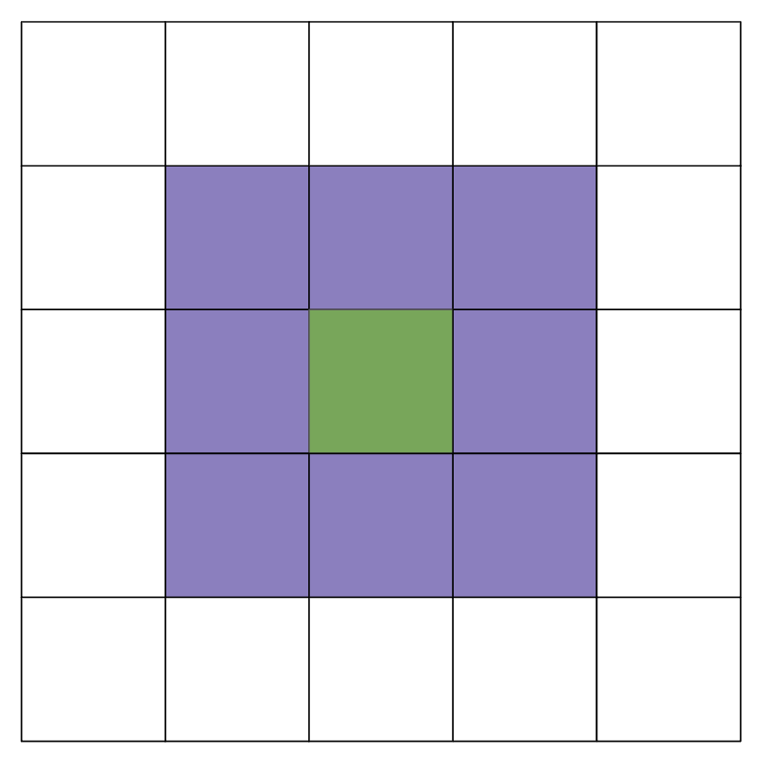

Lab 09: Conway's Game of Life
FAQ
Each assignment will have an FAQ linked at the top. You can also access it by adding “/faq” to the end of the URL. The FAQ for Lab 09 is located here.
Introduction
This lab will help you with Project 3: Build Your Own World (BYOW). The first part will teach you how to use a set of “tiles” to generate shapes on your screen. This will apply to building the rooms, hallways, and other features of your world in Project 3. Next week’s lab will go more into implementing interactivity, which is relevant towards building a part of Project 3 (but more on this in the next lab).
Pre-Lab
Some steps to complete before getting started on this lab:
- As usual, run
git pull skeleton main - Watch a previous semester’s project 3 getting started video at this link.
- The names and API may have changed slightly, but the bigger picture still applies.
- Understand that project 3 will be a marathon and not a sprint. Don’t wait until the last minute. You and your partner should start thinking about your design NOW.
- Read over Phase 1/skim over the project 3 spec and understand the main ideas.
In the first half of this lab, you will learn some basic techniques and tools that will be helpful for project 3.
Part I: Meet the Tile Rendering Engine
Boring World
Open up the skeleton and check out the BoringWorldDemo file. Try running
it and you should see a window appear that looks like the following:

This world consists of empty space, except for the rectangular block near the bottom middle. The code to generate this world consists of three main parts:
- Initializing the tile rendering engine.
- Generating a two dimensional
TETile[][]array. - Using the tile rendering engine to display the
TETile[][]array.
Read through the code to see an example of how the tile rendering API works. After creating a TERenderer
object, you need to call the initialize method, specifying the width
and height of your world, where the width and height are given in terms of the
number of tiles. Each tile is 16 pixels by 16 pixels, so for example, if we
called ter.initialize(10, 20), we’d end up with a world that is 10 tiles wide
and 20 tiles tall, or equivalently 160 pixels wide and 320 pixels tall.
The code also demonstrates how to work with TETile objects. You can either build them from scratch
using the TETile constructor (see TETile.java), or you can choose from a
palette of pregenerated tiles in the file Tileset.java. For example, the code
from BoringWorldDemo.java below generates a 2D array of tiles and fills them
with the pregenerated tile given by Tileset.NOTHING.
TETile[][] world = new TETile[WIDTH][HEIGHT];
for (int x = 0; x < WIDTH; x++) {
for (int y = 0; y < HEIGHT; y++) {
world[x][y] = Tileset.NOTHING;
}
}
Of course, we can overwrite existing tiles. For example, the code below from
BoringWorld.java creates a 15 x 5 tile region made up of the pregenerated tile
Tileset.WALL and writes it over some of the NOTHING tiles created by the
loop code shown immediately above.
for (int x = 20; x < 35; x++) {
for (int y = 5; y < 10; y++) {
world[x][y] = Tileset.WALL;
}
}
$(0, 0)$ is the bottom-left corner of the world (not the top-left as you may be used to). For example, for position (5, 4), we would go 5 units to the right and then 4 units up. We will work with this orientation in the lab.
The last step in rendering is to call ter.renderFrame(world), where
ter is a TERenderer object. Changes made to the tiles array will not appear
on the screen until you call the renderFrame method.
Try changing the tile specified to something else in the Tileset class other
than WALL and see what happens (like Tileset.GRASS or Tileset.WATER).
Also, try experimenting with changing the constants in the loop and see
how the world changes.
Tiles themselves are immutable! You cannot do something like
world[x][y].character = 'X'. Look at TETile to help understand!
Why do we initialize the world to Tileset.NOTHING, rather than just leaving it
untouched? The reason is that the renderFrame method will not draw any tiles
that are null. If you don’t initialize the world to Tileset.NOTHING, you’ll
get a NullPointerException when you try to call renderFrame.
Random World
Now open up RandomWorldDemo.java. Try running it and you should see something like this:

This world is sheer chaos – walls and flowers everywhere! If you look at the RandomWorldDemo.java file, you’ll
see that we’re doing a few new things:
- We create and use an object of type
Randomthat is a “pseudorandom number generator”. - We use a new type of conditional called a
switchstatement. - We have delegated work to functions instead of doing everything in
main.
A random number generator does exactly what its name suggests, it produces an
infinite stream of numbers that appear to be randomly ordered. The Random
class provides the ability to produce pseudorandom numbers for us in Java.
For example, the following code generates and prints 3 random integers:
Random r = new Random(1000);
System.out.println(r.nextInt());
System.out.println(r.nextInt());
System.out.println(r.nextInt());
We call Random a pseudorandom number generator because it isn’t truly
random. Underneath the hood, it uses cool math to take the previously generated
number and calculate the next number. We won’t go into the details of this math,
but see Wikipedia
if you’re curious. More importantly, the sequence generated is deterministic, and the
way we get different sequences is by choosing what is called a “seed”. This pseudorandomness will be a core part of Project 3.
In the above code snippet, the seed is the input to the Random constructor, so
1000 in this case. Having control over the seed is pretty useful since it
allows us to indirectly control the output of the random number generator. If we
provide the same seed to the constructor, we will get the same sequence values.
For example, the code below prints 4 random numbers, then prints the SAME 4
random numbers again. Since the seed is different from the previous code
snippet, the 4 numbers will likely be different from the 3 numbers printed
above. This will be super helpful in Project 3, as it will give us deterministic
randomness: your worlds look totally random, but you can recreate them
consistently for debugging (and grading) purposes.
Random r = new Random(82731);
System.out.println(r.nextInt());
System.out.println(r.nextInt());
System.out.println(r.nextInt());
System.out.println(r.nextInt());
r = new Random(82731);
System.out.println(r.nextInt());
System.out.println(r.nextInt());
System.out.println(r.nextInt());
System.out.println(r.nextInt());
In the case a seed is not provided by the user/programmer, i.e.
Random r = new Random(), random number generators select a seed using some
value that changes frequently and produces a lot of unique values, such as the
current time and date. Seeds can be generated in all sorts of other stranger
ways, such as
using a wall full of lava lamps.
For now, RandomWorldDemo uses a hard coded seed, namely 2873123, so it will
always generate the exact same random world. You can change the seed if you want
to see other random worlds, though given how chaotic the world is, it probably
won’t be very interesting.
The final and most important thing is that rather than doing everything in
main, our code delegates work to functions with clearly defined behavior.
This is critically important for your project 3 experience! You’re going to want
to constantly identify small subtasks that can be solved with clearly defined
methods. Furthermore, your methods should form a hierarchy of abstractions!
At this point, please ensure that you’ve read through and understood BoringWorldDemo
and RandomWorldDemo (important!) and that you understand roughly how to work with
TERenderer, TETile, and Tileset. It’ll be expected for the next parts that you
have a rough idea of how the first two demo classes work and how to work with the tile
rendering classes.
Part II: Conway’s Game of Life
Introduction
Conway’s Game of Life (or just Life) is a cellular automaton created by mathematician John Horton Conway. Cellular automaton is a model of computation related to automata theory (i.e. study of abstract machines and automata/self-operating machines). We don’t really need to know automata theory or what cellular automaton is exactly, but the Game of Life is meant to be an example of how cells change over time. It is a zero-player game, with the world existing as an infinite, two-dimensional grid of cells. Each cell is either alive or dead, with the status of each cell changing at each time step, dependent on the status of its 8 neighbors (we’ll go more into the rules later). An example of what the game looks like is shown below:

Future generations in the game are dependent on the initial state. The initial state will effectively act as a “seed” for what future states will look like. For this lab, the initial state can be generated with a random seed, or it can be provided in the form of a file.
If you want to see what the games looks like, you can play an online version of it here and watch a cool example of it here.
Implementation
Before we get started, please take this time to go through the GameOfLife file. It’s
important to familiarize yourself with the current code before you start working with it
(especially the variables that have been provided to you).
Here are also a couple of reminders and tips before you begin:
- For this lab, we’re implementing a slightly modified version of Conway’s Game of Life, such that we’re treating the area beyond the bounds of the world as dead cells, instead of being infinite.
- You can assume that each tile on the board will always be
Tileset.NOTHINGorTileset.CELL. - As a reminder, (0, 0) is the bottom left of the board.
- Comments have been provided for you above each method, as well as in the form of
TODOcomments for the methods you’ll be implementing.
Make sure you’ve read through the tips and reminders above! We’ll assume you understand them in the next sections.
Constructors
There are multiple constructors in this class. You don’t (and shouldn’t) modify them. Some of the
constructors take in an extra argument called boolean test - these constructors are primarily
used for testing without rendering (as the autograder can’t render/display anything). If you
want to view the visual output of the game, view this section.
Or if you’re writing your own tests locally, you can use the constructors without that additional
argument as well to render and test visually.
Let’s move onto the methods we’ll be implementing.
nextGeneration
As we mentioned earlier, the world of Conway’s Game of Life is a two-dimensional grid of cells, with each cell existing as dead or alive. The status of those cells will change based on the status of their 8 neighbors (vertical, horizontal, diagonal). An example of this is shown below, where the green cell is our current cell and the purple cells are its neighbors:

When you are checking how the status of a cell will be changed, you only need to be concerned with its direct 8 neighbors as shown above.
At each timestep, the status of a cell will change based on the following rules:
- Any live cell with fewer than two live neighbors dies, as if by underpopulation.
- Any live cell with two or three neighbors lives on to the next generation.
- Any live cell with more than three neighbors dies, as if by overpopulation.
- Any dead cell with exactly three live neighbors becomes a live cell, as if by reproduction.
In nextGeneration, we want to “update” the state of our board according to the rules
that are provided above. The current state of the board is represented by
TETiles[][] tiles. The provided TETile[][] newGen represents the next state and
is initially filled with Tileset.NOTHING. We want to take the current state
of the board, store the next generation/state in newGen and return it.
Implement the method nextGeneration according to the rules above.
Persistence
Before we get into the other two methods you’ll need to implement, let’s talk a little about Project 3. In Project 3, you’ll have to implement the ability to save and load your game state. The goal of this portion of the lab is to help you gain familiarity with the idea of persistence. What is persistence?
Whenever a Java program is run, we use variables to keep track of our values. But once that
program ends, those values “no longer exist” or they are no longer accessible. For example,
if we declared a variable like int x = 50 in a program, it will only exist inside
the program - with persistence, we would like this value to continue to exist after the program
ends. To continue accessing those values, we want to ensure that the state of our program persists.
This is called persistence.
For this part of the lab, we’ve provided a class, FileUtils, to help you save and load
information into a file. Please use the provided class in your implementation and read
through the class before moving on.
saveBoard
If you navigate to patterns, you’ll see several text files that contain
different patterns. These specific patterns represent several initial states
that we can pass it, and they are saved in a specific format
that we want to replicate in saveBoard. Let’s walk through one of them
(glidergun.txt) as an example:
50 50
00000000000000000000000000000000000000000000000000
00000000000000000000000000000000000000000000000000
00000000000000000000000000000000000000000000000000
00000000000000000000000000000000000000000000000000
00000000000000000000000000000000000000000001100000
// The rest is hidden away
The first two numbers you see are the width and height of the board respectively and are separated by
a single space. The next lines in the text file represent our board (in the example above,
we’ve hidden away most of it since it gets quite long). In code, each position of the
board is either Tileset.NOTHING or Tileset.CELL. When we save it into a text file,
we will save it so that 0 represents NOTHING and 1 represents a CELL.
This is a relatively large file, so let’s look at a smaller example from a test that’s provided. If you have the given tiles,
TETile[][] result = new TETile[][] {
{Tileset.NOTHING, Tileset.CELL, Tileset.NOTHING},
{Tileset.NOTHING, Tileset.CELL, Tileset.CELL},
{Tileset.CELL, Tileset.NOTHING, Tileset.NOTHING},
{Tileset.NOTHING, Tileset.CELL, Tileset.NOTHING}
};
it will be saved in the text file like below
3 4
010
011
100
010
An important thing to note is that we change the orientation of the board, so that
the bottom left is (0, 0). Originally, the result 2D array would be read in as
(0, 0) as the top left, but we take care of this difference (through transposing
and flipping). You don’t need to worry about how this works, as we’ve taken
care of this change for you, but just be aware you should be working with
the assumption that the bottom left is (0, 0).
To repeat, you don’t need to be transposing or flipping any board in your implementation in any parts of the lab.
There are three additional requirements:
- Make sure the orientation in the text file represents the same orientation as the board. The top right corner of the board should match the top right corner of what is saved in the text file, as shown in the example above. Think about why this is important. If (0, 0) represents the bottom left of our board, but we write from the top to the bottom, what might end up happening?
- For each row you write in to the text file, make sure to append
\n. This applies to the dimensions written at the top of the text file, although the code has already been provided to you in the skeleton for this method. This is to ensure that the board representation in the text file is accurate; it will also be useful in the next method,loadBoard. - The name of your text file that you save to must be called
src/save.txt. We’ve provided it already as a variable, so do not delete it.
In the skeleton, we’ve provided TODO comments. You can access the current state of
the board through the instance variable currentState.
Implement the method saveBoard.
loadBoard
Now, instead of saving, we want to load from a given file. When loading, you can assume
the format is the same as what’s mentioned in the previous part in saveBoard. That is,
the first line are the dimensions, and the rest of the lines are the board. We want to load
this information into a TETile[][] and return it.
Based on the requirements mentioned in saveBoard, you can assume that each line is separated
by “\n” and that the orientation of the board is correct, that is treat the bottom left as
(0, 0) (keep in mind that if your saveBoard doesn’t follow the exact format mentioned,
it might affect your loadBoard). For this part, you might find the split and
charAt function from the String class useful.
Implement the method loadBoard. Since we’re loading in the game, make sure to initialize
the instance variables width and height.
Testing and Running the Game
We’ve provided some local tests to help check your implementation. Passing all of them does not guarantee full score on the autograder.
We’ve provided some files for you in patterns that represent some initial states you can
pass in. DO NOT MODIFY THEM. They should not be modified as they are used in the local
tests and it is expecting them to be untouched - the local tests will check if they are modified
and the tests will not run if the files are edited. Some test text files are also provided -
as with the ones in patterns, do not modify them.
To run the game, you can run it through the main method at the bottom of GameOfLife.java.
If an initial state is not provided (a text file), it will generate a random one
through a random seed.
If you want to run the game with one of the initial states provided (or potentially create your own!),
navigate to Run –> Edit Configurations. Go to Applications –> GameOfLife. If it’s not there,
click on the + at the top left and select Applications. For Main class, type in GameOfLife and click
on the option that shows up for it. For your program arguments, you want to specify the file
path as well as add in the -l flag. For example, if you wanted to use the hammerhead.txt
as an initial state, you would pass in the following for your program arguments:
-l patterns/hammerhead.txt
Then, go ahead and run the application.
If you’re writing your own test cases, please make sure to use square matrices, specifically if you’re working
with the nextGeneration method. The provided local tests and the ones on the autograder will still
run as intended, but local tests written for nextGeneration should still be done with an n x n board.
Project 3 Saving and Loading
After finishing saveBoard and loadBoard, notice that we ended up saving the entire board
into the file (i.e. each Tileset and we represented them with 0s and 1s) along with the height
and width of the board. Do you think this would be the best approach to take in Project 3?
Having to iterate through the entire board and save it in into the text file seems a little bit complicated - it might not be the most optimal for runtime, and it might not be necessary for Project 3! Consider what the goal is for saving and loading. We want to ensure that we are able to load back in the world we saved, that it somehow continues to persist in some form even after the program ends. From the user’s perspective, they don’t need to know how this works (so it won’t really matter, for example, if they are able to see the entire board representation in the saved text file). So instead of trying to save the entire world into a text file, we can focus more on how we might recreate the world with specific information, so it appears from the user’s end that the world they saved is loaded back in the exact state they left it.
You don’t need to exactly know how you should save and load in Project 3 as of now, but
it would be a good time to start thinking about the design of it. It’s important to know
that you’ll be relying on some kind of pseudorandom generator - while random,
there is an aspect of determinism to it if a seed is given to the generator.
To reiterate a point from earlier about Random and pseudorandom
generators: “This will be super helpful in Project 3, as it will give
us deterministic randomness: your worlds look totally random,
but you can recreate them consistently for debugging (and grading) purposes.”
Grading and Submission
This lab is worth 0 points.
To summarize, there are three methods for you to implement:
nextGenerationsaveBoardloadBoard
Before submitting, make sure that you’ve passed all the provided local tests. The autograder will be testing the functionality of your loading and saving.